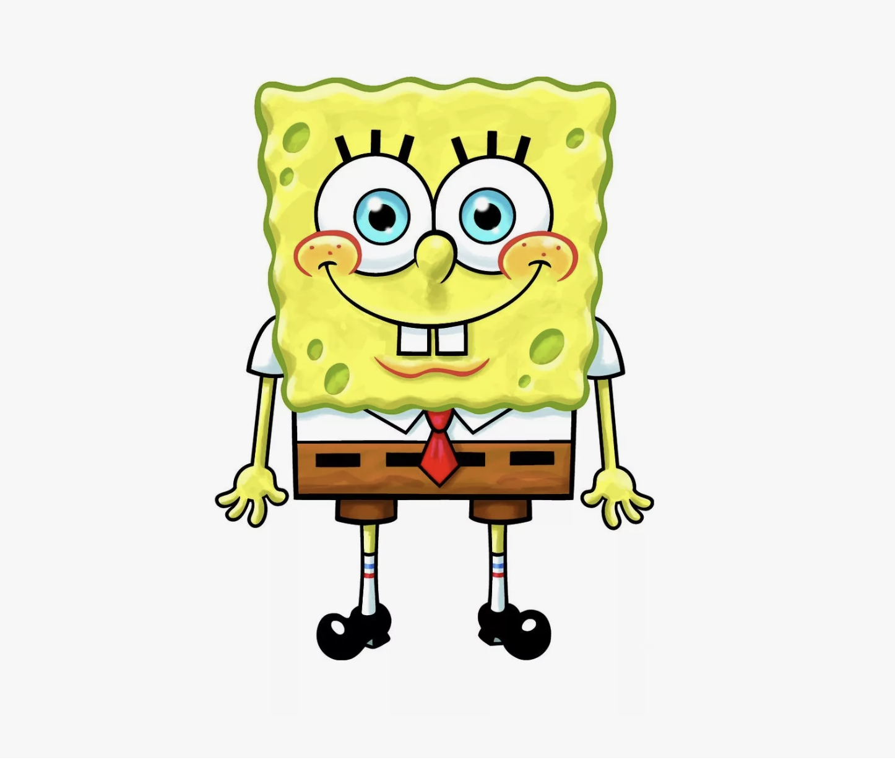

Губка Боб Квадратные Штаны
Повар/ Ловитель медуз/ Искатель приключений
О себе
Контакты:
Адрес: Под водой, город Бикини Боттом, улица Ракушка, дом 5
Телефон: +1-234-567-89-00
E-mail: ilovekrabbypatties@bb.underwater
Образование:
- "Школа вождения миссис Пафф", Бикини Боттом Специальность: Водитель подводной лодки (Курс неокончен, но очень старался)
- "Школа ловли медуз", Озера медуз Специальность: Ловля и фотографирование медуз (Красный диплом)
- "Уроки жизни от Патрика" Специальность: Сидение на месте и разбивание камней
Личные качества:
Энергичный, жизнерадостный и очень ответственный повар. Обладаю уникальной способностью
сохранять позитивный настрой в любых ситуациях, даже когда тонна якорей падает на голову или
мистер Крабс урезает зарплату. Готов работать сверхурочно без выходных, так как обожаю свою
работу больше всего на свете. Умею жарить тысячи котлет в час, не теряя качества.
Хобби:
- ловля медуз;
- выдувание пузырей;
- карате;
- охота за новыми рецептами.
Опыт работы/ Навыки
Бикини Боттом с 1999 года по настоящее время
- Приготовил и перевернул более миллиона крабсбургеров, установив рекорд скорости в Бикини Боттом.
- Разработал и внедрил фирменный танец с лопаткой, повышающий настроение коллег и клиентов.
- Неоднократно спасал ресторан от разорения, кражи секретной формулы и происков Планктона.
- Поддерживал безупречную чистоту на кухне.
- Получил бесчисленное количество наград «Сотрудник месяца».
1 день (уволился по собственному желанию)
- Освоил навыки выживания в экстремально депрессивной атмосфере.
- Отказался от разглашения секретной формулы крабсбургера, несмотря на уговоры начальника.
- Понял, что настоящая работа должна приносить радость, а не прибыль врагу.
Навыки:
- абсолютное владение кухонной лопаткой (метание, жонглирование, виртуозное переворачивание);
- знание рецепта Крабсбургера наизусть;
- умение мыть посуду с закрытыми глазами, напевая песни;
- командная работа (умею находить общий язык даже со Сквидвардом);
- креативность (могу приготовить праздничный торт из ничего).